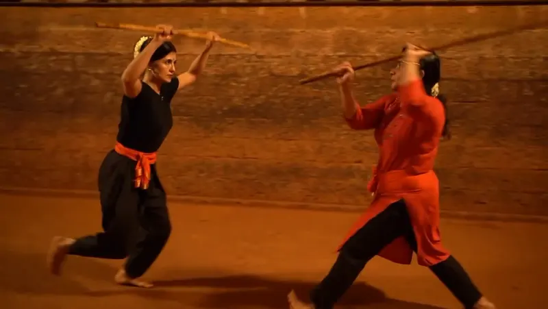
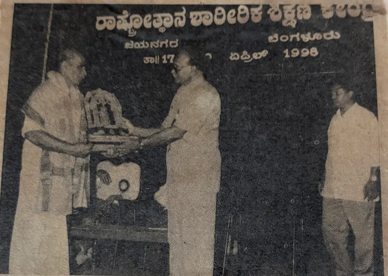
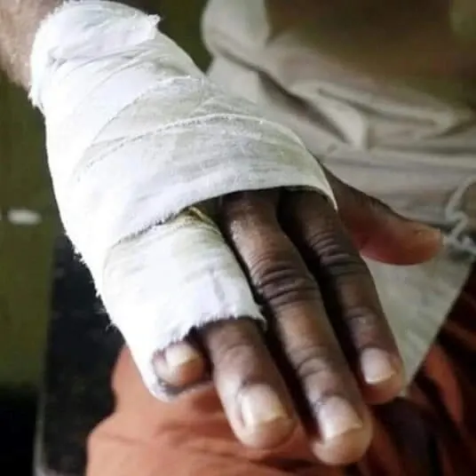

Training
Kalaripayattu, learnt step by step in the lineage's own way, in the Kalari and online.
About & lineage
The Kalari that Veerasree Sami Gurukkal opened at Puthiyara in 1952, and the lineage that carries it forward.
Hindustan Kalari Sangham began in 1952, when a young Kalari practitioner from Calicut named Swaminathan opened a Kalari at Puthiyara. Initiated into Kalaripayattu at seven, and forced by family circumstances to leave school and work in a tile factory, he never let go of his learning, going on to study Ayurveda and the Tantra shastras.
Known to generations as Veerasree Sami Gurukkal, he treated patients from across India and grew the Sangham into branches throughout Calicut district and beyond. Since his passing in 2006, his students and family have carried the lineage forward through daily training, healing and the annual Gurusmriti in his memory.

Kalaripayattu passes from Guru to student. Sami Gurukkal learnt in this line.
Swaminathan, later Veerasree Sami Gurukkal, is born in Calicut.
Initiated into Kalaripayattu at the age of seven.
Founds Hindustan Kalari Sangham at Puthiyara.
Sami Gurukkal passes away. Gurusmriti has been held in his memory every year since.
Lakshmanan Gurukkal founds Kalarigram near Auroville.
Online Kalaripayattu classes begin.
Represents India, with Kalarigram, at the BRICS Traditional and Indigenous Demonstration Games.

Kalaripayattu, learnt step by step in the lineage's own way, in the Kalari and online.

Marma Chikitsa and traditional fracture care, as Sami Gurukkal practised them.

Poojas, festivals and remembrance that keep the Kalari a sacred space.